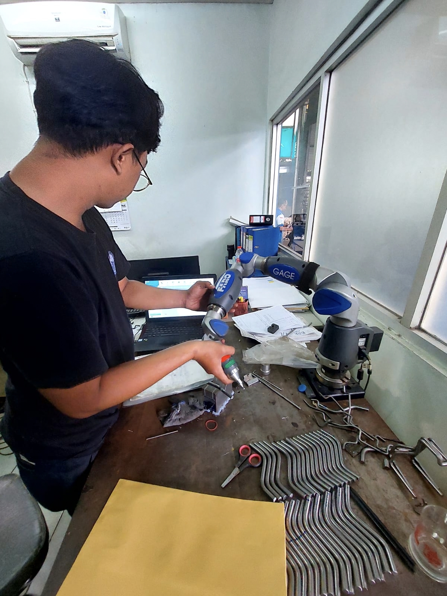
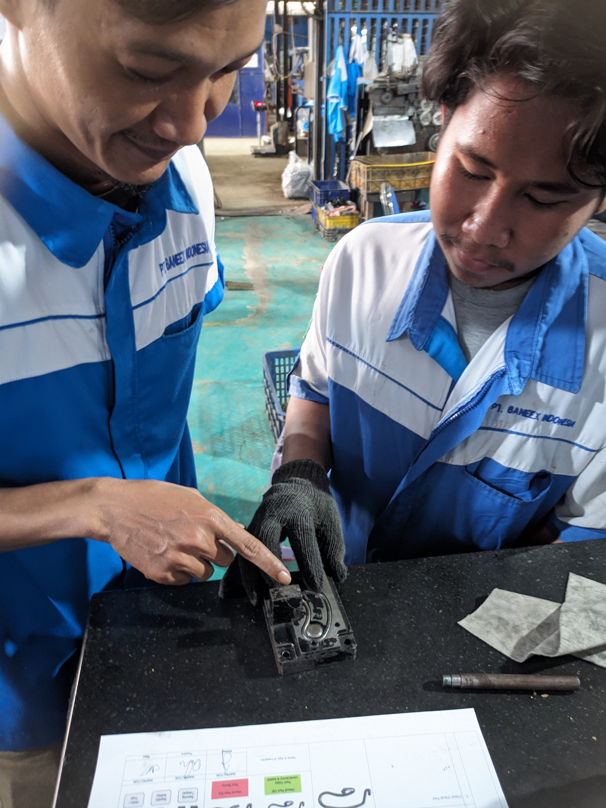
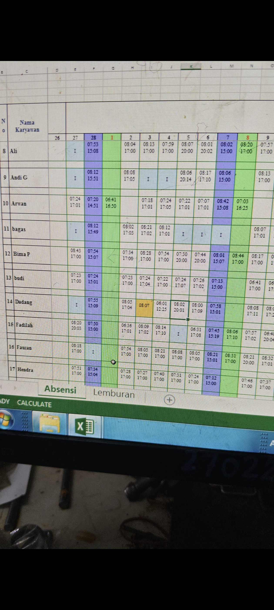
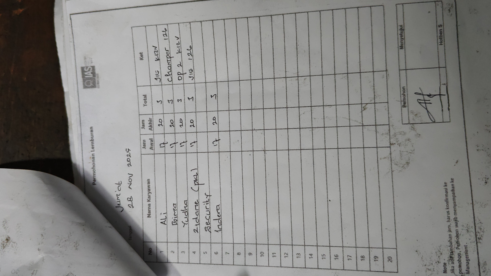
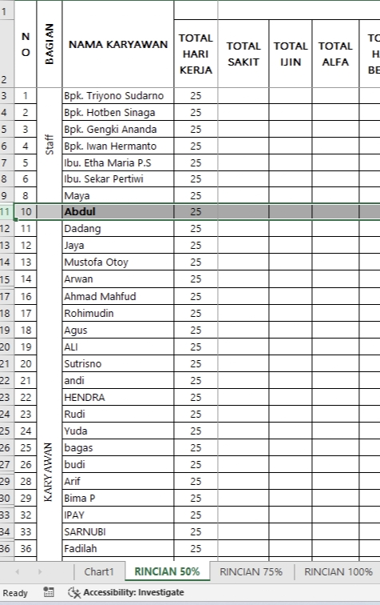
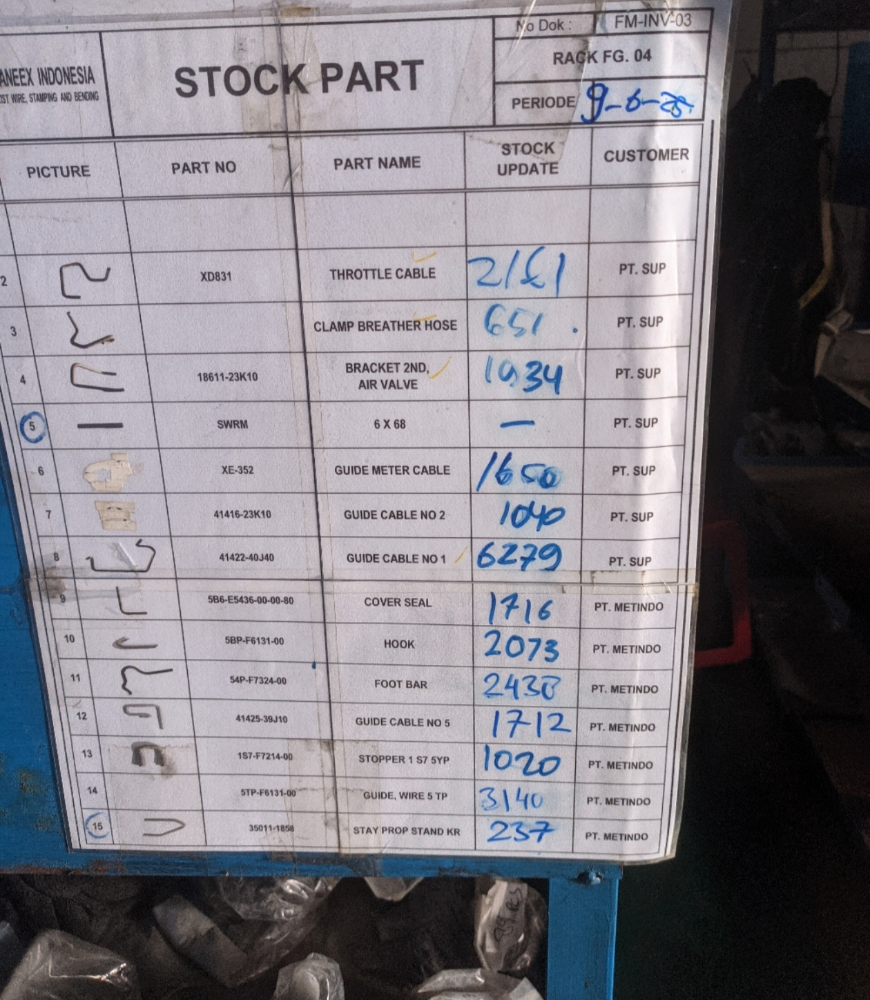

Portofolio & Sertifikasi

Pengukuran Presisi Faro CMM
Melakukan inspeksi mutu secara teliti menggunakan lengan pengukur portabel Faro CMM untuk memastikan dimensi komponen sesuai standar teknis.

Analisis & Problem Solving (RCA)
Berdasarkan hasil inspeksi kualitas, ditemukan adanya ketidaksesuaian berupa gap (celah) pada barang hasil produksi. Sebagai tindak lanjut, tim saat ini sedang melakukan pemeriksaan lanjutan dan investigasi menyeluruh untuk mengidentifikasi akar penyebab (root cause) terjadinya masalah tersebut.

Checksheet & Baca Gambar Teknik
Keahlian membaca blueprint/gambar teknik secara presisi serta mengimplementasikan checksheet inspeksi (incoming, in-process, final) dengan akurat.

Verifikasi Absensi Karyawan
Pengelolaan dan pengecekan data kehadiran harian/bulanan karyawan secara teliti untuk memastikan validitas data payroll dan kedisiplinan kerja.

Rekapitulasi Surat Perintah Kerja Lembur (SPKL)
Melakukan pencatatan, verifikasi, dan rekapitulasi lembur operasional perusahaan secara sistematis sesuai dengan peraturan ketenagakerjaan yang berlaku.

Administrasi & Pengelolaan Personalia
Mendukung pengelolaan operasional HR mulai dari rekapitulasi data karyawan, bonus tahunan, hingga dokumentasi kepegawaian internal.

Inbound & Outbound Barang
Mengelola proses penerimaan (inbound) dan pengeluaran (outbound) barang secara sistematis untuk memastikan kelancaran alur logistik di gudang.

Stock Opname & Inventory
Melakukan pengecekan stok fisik secara berkala dan mencocokkannya dengan data sistem guna menjaga akurasi persediaan barang (inventory).

Implementasi 5R/5S
Menerapkan budaya kerja 5R (Ringkas, Rapi, Resik, Rawat, Rajin) untuk menjaga kebersihan, keselamatan, tata letak barang, dan efisiensi area kerja warehouse.
Pembuatan NIB (Nomor Induk Berusaha)
Program pendampingan dan pembuatan legalitas usaha (NIB) bagi pelaku UMKM lokal guna mendukung legalitas dan pengembangan ekonomi masyarakat.
Infografis & Publikasi Desa Cipayung
Perancangan media informasi/infografis visual dan program penyuluhan masyarakat sebagai bentuk kontribusi aktif dalam kegiatan KKN.
Ketua Pelaksana KKN & Program Kesehatan
Memimpin tim KKN dalam mengkoordinasikan program sosial kemasyarakatan, termasuk kolaborasi dalam kegiatan posyandu/imunisasi anak di desa.